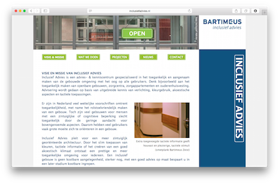
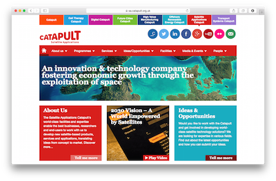

Portfolio and online Businesscard of undersigned
View my work, or get in Touch...
I'm a Front-end Developer who is full off excitement to work with new technologies. Also I'm capable off puting myself in the shoes of both the client, and the end user.
I excel in translating concepts into Mockups and fully responsive websites. Besides building out sites and pages, I also have experience in building and testing Accessible sites (according to the WCAG2.0 standard).
Off course I can work with Adobe software like Photoshop and Illustrator. Coding I do with HTML5, CSS3 , Compass / SASS, LESS and Javascript (Frameworks like jQuery and jQuery Mobile).
Through the years I've worked on donzens off projects, both as an employee, and as a Freelancer. Her you find a collctions of the work I've done. I catagorized them as Websites, Design and Various other work
here is a collection of sites I have made:
This was a freelance assignment to make their current website more accessible.
At my latest job, I had the opportunity to work for the Catapult websites of Innovate UK, The British innovations catalyst.
For this company specialised in asbestos analysis and removal, I made their first site and developed in cooperation with the business owner their comperate Identity
here is a collection of Various other work I have made. Most of these are on Github, or live inside my own envirements
For a work situation we needed to know how to make a iframe responsive in the cause were you would have access to both the iframe content, as to the site that is loaded in the frame. The live demo can be found in the link below:
And here is a link the repository on Github:
Here is a link to my Codepen.io acount. Here I do quick pens to try to solve different scenarios. The link can be found in the link below:
To gain more expirience with jQuery, I made a small exercise, where you can close articles